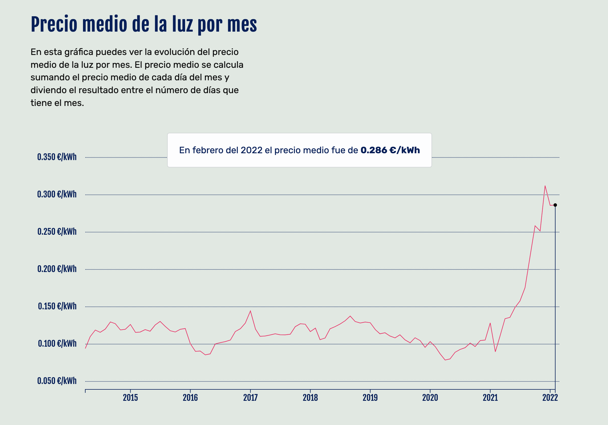
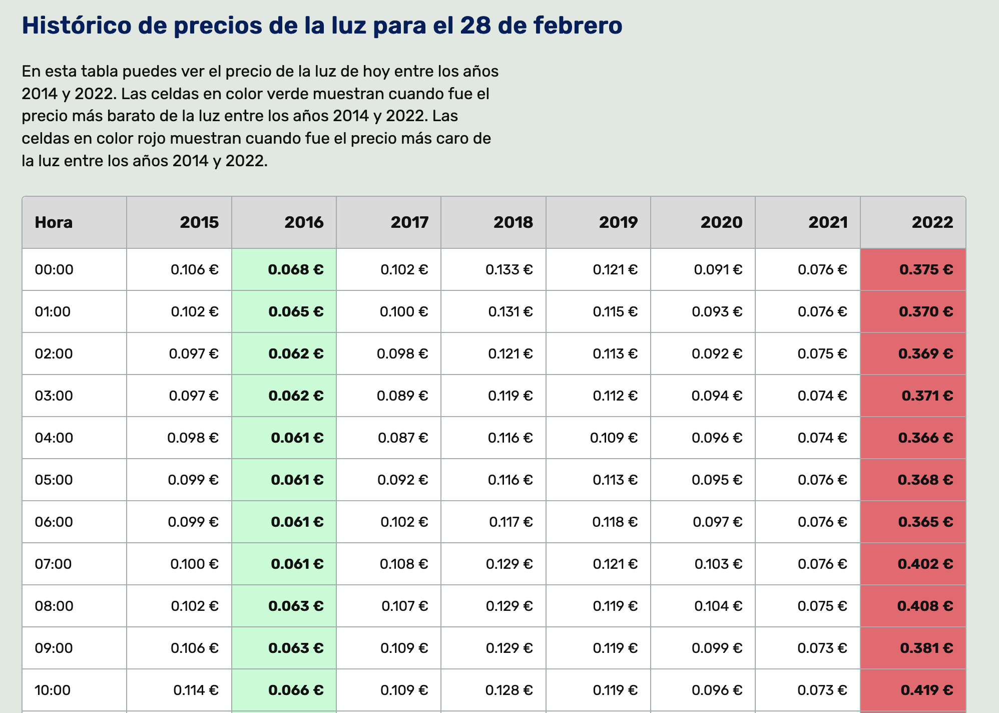
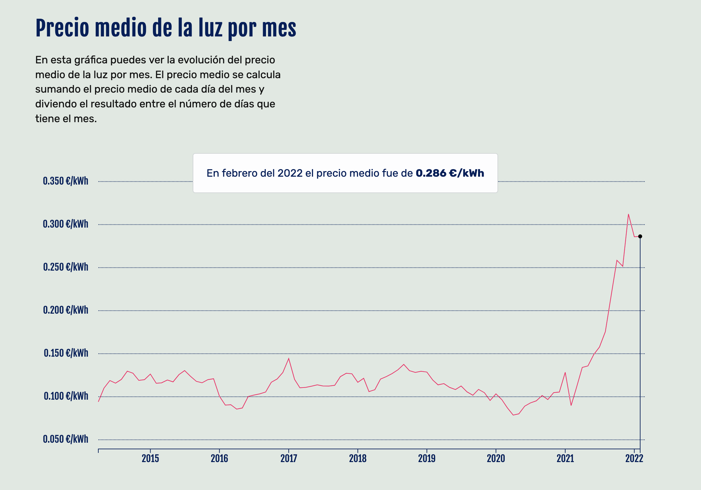
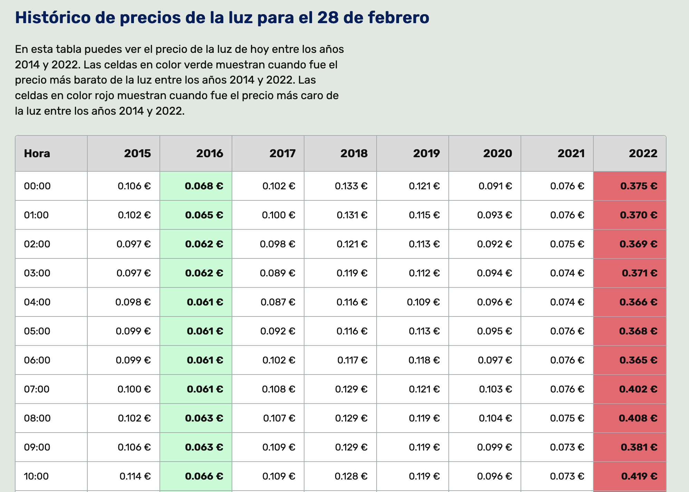

Puedes apoyar económicamente este proyecto en:
Novedades: precio de la luz hoy y precio de la luz mañana
24 de febrero de 2022
Llevo desde diciembre trabajando en algunas pequeñas novedades. Me he hecho con todos los datos públicos del precio de la luz por horas desde abril de 2014. Después de quedarme con lo interesante, limpiarlos y revisarlos he empezado a construir gráficas y tablas. La idea es dar un poco de contexto de la situación actual, y ver una comparativa.
Los datos me sirven para publicar en la newsletter una tabla comparativa. En ella se muestra el precio luz mañana y los precios que tuvo la luz en los años pasados, así que los que estáis suscritos(es gratuita, aquí el enlace) podéis comparar el precio con los años anteriores. Y como siempre en la web puedes consultar los horarios luz para saber el precio de la luz hoy.
Por no atiborrarla de colores he decidido que solo voy a usar el verde para mostrar en que año fue más barata, y en rojo para ver cuando fue más cara, que por desgracia va a ser muchas veces este año. La tabla también esta incluida en la home de la web.
Como tengo todos los datos, me he puesto a calcular el precio de la luz por mes y por día. He creado una nueva sección llamada gráficas donde hay cuatro gráficas, una que muestra el precio medio de la luz por mes, otra muestra el precio medio de la luz por día, otra muestra el precio de la luz por hora del día y una última que muestra el precio de la luz por día de la semana. En la home también se muestra otra gráfica que muestra el precio que ha tenido la luz por hora en el último mes.

 


